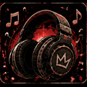
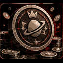
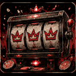
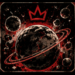
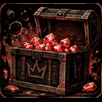

МУЗЫКА ВМЕСТЕ ✦ ЕЖЕДНЕВНЫЕ ДЗЕНИ ✦ РАЗДАЧИ ИГР ✦ ТВОЙ СЕРВЕР — ТВОЯ КОМПАНИЯ
01 / ВОЗМОЖНОСТИ
Больше поводов остаться в голосовом.

01 — СЛУШАЙ
Твоя очередь. Твоя музыка.
Ищи треки по названию или отправляй ссылки YouTube и Spotify. Ставь свой трек на паузу, голосуй за пропуск чужого. Роль DJ даёт управление всей очередью.
/playПо умолчанию — 10 дзени
По ссылке Spotify подбирается версия на YouTube. Ошибка до начала воспроизведения и удаление ожидающего трека через /remove возвращают стоимость.


02 — ИГРАЙ
Забери дзени. Испытай удачу.
Получай награду раз в 24 часа, выбирай ставку в слотах и собирай комбинации. А потом загляни в рейтинг своего сервера.
/dailyПо умолчанию — 100 дзени
Администратор меняет награду и цену музыки через /economy. Дзени нельзя купить за деньги или вывести. Выигрыш в слотах не гарантирован.


03 — СОБИРАЙ
Твой профиль. Твои достижения.
Следи за балансом, статистикой и прогрессом достижений. На каждом сервере — отдельный счёт и собственный рейтинг.
/profileВесь прогресс рядом
Голосовые фразы Ривы доступны по желанию администратора. На новых серверах они выключены.
04 — ЗАБИРАЙ
Новая игра. Без лишних трат.
Riva Gaming сообщает о раздачах полных игр Steam, Epic Games Store и GOG в выбранном текстовом канале. Бесплатные выходные можно включить отдельно.
/giveaways setupНастраивает администратор
Источник — GamerPower. Без DLC и внутриигровых предметов. Для создания вебхука нужны права просмотра канала и управления вебхуками. Бесплатные выходные дают временный доступ.
02 / БЫСТРЫЙ СТАРТ
Три шага. И Рива с вами.
1
Пригласи на сервер
Нажми «Добавить на сервер» и выбери сервер, которым можешь управлять.
2
Выбери комнату
Вызови /setup, укажи голосовой и, при желании, текстовый канал. Для настройки нужно право «Управлять сервером».
3
Включай музыку
Получи монеты через /daily, зайди в выбранную комнату и запусти /play. Цена сервера — в /balance, первые шаги — в /start, все подсказки — в /help.
03 / ПОД РУКОЙ
Знакомься с командами.
Музыка
/play · /queue
Добавить трек и посмотреть очередь
/pause · /resume
Пауза и продолжение своего трека
/skip
Пропуск своего трека или голосование за чужой
/remove
Удалить свой ожидающий трек с возвратом стоимости
/stop
Остановить музыку и очистить очередь — для DJ и администратора
Дзени и игры
/daily · /balance
Ежедневная награда, баланс и текущая цена музыки
/slots · /slotsrules
Слоты со ставкой и правила игры
/profile · /achievements
Статистика и достижения
/top
Рейтинг по балансу на сервере
Раздачи игр
/giveaways setup
Создать вебхук Riva Gaming в выбранном канале
/giveaways settings
Выбрать магазины и бесплатные выходные
/giveaways status
Проверить состояние рассылки
/giveaways disable · resume
Отключить или возобновить уведомления
Настройки сервера
/setup
Комната, уведомления и разрешение фраз
/dj set · clear · status
Назначить роль DJ и посмотреть правила очереди
/economy settings · status
Награда, цена трека и бесплатная музыка
/status
Состояние и настройки Ривы
Голосовые фразы
/phrase
Проиграть фразу, если администратор разрешил
/random
Настроить случайные фразы — для администратора
На новом сервере фразы выключены. Случайное воспроизведение включается отдельно.
Помощь и данные
/start · /help
Первые шаги, подсказки и поддержка
/privacy
Какие данные хранит Рива
/delete_my_data
Удалить свой профиль на текущем сервере с подтверждением
Для управления музыкой зайди в комнату Ривы. Лимит — 5 ожидающих треков от участника, до 15 минут каждый. DJ и участники с правом «Управлять сервером» управляют всей очередью.